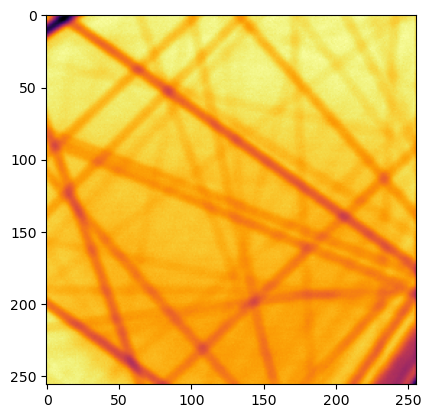
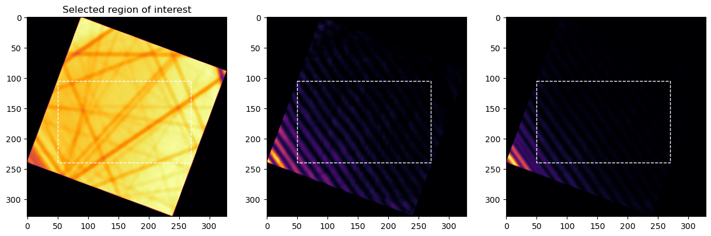
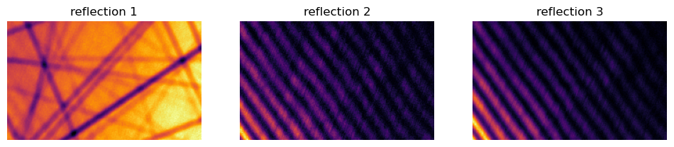
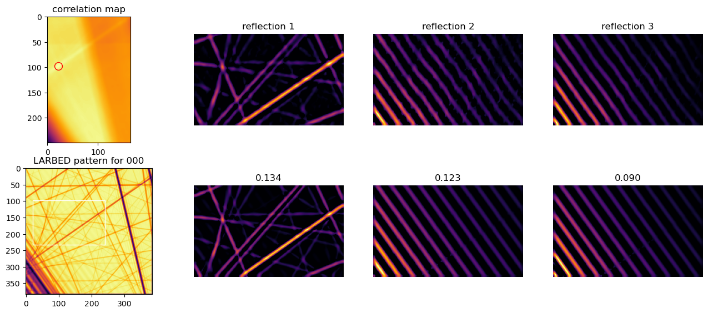
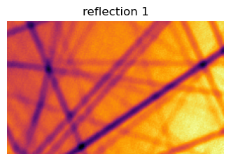
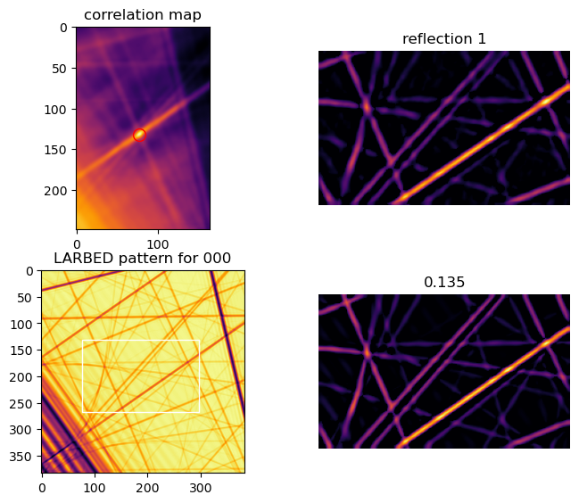
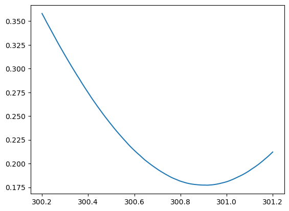

High voltage calibration example¶
[1]:
import numpy as np
import matplotlib.pyplot as plt
from skimage.filters import farid, sobel, scharr, prewitt, roberts
from pyextal.dinfo import LARBEDDiffractionInfo
from pyextal.roi import LARBEDROI
from pyextal.optimize import CoarseOptimize, FineOptimize
from pyextal.gof import Chi2, Chi2_const
# set the plotting colormap
plt.rcParams['image.cmap'] = 'inferno'
pyextal package imported. Version: 0.0.1
load data¶
load the off zone axis LARBED data
[2]:
data = np.load("box/20250420/111-002 holz area1/raw_stack_ri4.npy")
data = np.flip(data,axis=2)
variance = np.load("box/20250420/111-002 holz area1/deconv3_ri3_subpixel_realconvstd2.npy")
gindex = np.load("box/20250420/111-002 holz area1/deconv3_ri3_subpixel_realconv_g_vectors.npy")
# dp = data[0]
plt.imshow(data[21])
[2]:
<matplotlib.image.AxesImage at 0x73cc52399410>

initialize diffraction info class¶
data: LARBED intensity
thickness
tiltx
tilty
gl
.dat file
gindex for LARBED
variance: actually not needed here, but required for the class
[3]:
dinfo = LARBEDDiffractionInfo(data, 1100, 0, 0, 63.646, 'si110_111_002holz.dat', gindex, varianceMaps=variance)
region of interest parameters:¶
defines the region of interest for refinement
rotation: relative to the xaxis set in .dat
gInclude: g vector to include in the refinement
gx: horizontal g vector
[4]:
rotation = -112.07 +1.66
gInclude = [(0,0,0), (1,-1,-1),(-1,1,1)]
gx = np.array([2,-2,0])
[5]:
roi = LARBEDROI(dinfo=dinfo, rotation=rotation, gx=gx, gInclude=gInclude)
include beam initialized
group symmetry initialized
specify the region of interest¶
[6]:
roi.selectROI(np.array([[[105,50], [105, 270], [240,50], [150,150]]]))
roi.displayROI()

initialize coarse refine¶
only support rectangular ROI, and only one region for coarse refine
[7]:
coarse = CoarseOptimize(dinfo=dinfo, roi=roi)

define a customize image filtering function for coarse refinement¶
function signature:
def filter_func(image, sim=False):
"""
:param image: 2D numpy array
:param sim: if True, the image is a simulated image, otherwise it is experimental
:return: 2D numpy array
"""
Since experimental data and simulated data have very different ranges, it might be desirable to have different filtering for them. This is supported by the sim parameter.
[8]:
from skimage.filters import meijering
def meij_filter(data, sim=False):
return meijering(data, sigmas=range(2, 4), black_ridges=True)
[9]:
coarse.optimizeOrientationThickness(filter=meij_filter)
Optimization terminated successfully;
The returned value satisfies the termination criteria
(using xtol = 0.001 )
thickness: 1129.580194918737, gl: 63.646, tiltY: -0.31703060406687156, tiltX: 0.5191950472399494
[10]:
coarse.displayCoarseSearch(filter=meij_filter)

redefine ROI and coarse refine¶
here we only want to keep the bright field pattern for refining high voltage, as we already refined the thickness, so the dark-field rocking curve spacing is not needed
[11]:
roi = LARBEDROI(dinfo=dinfo, rotation=rotation, gx=np.array([2,-2,0]), gInclude=[(0,0,0),])
roi.selectROI(np.array([[[105,50], [105, 270], [240,50], [150,150]]]))
coarse = CoarseOptimize(dinfo=dinfo, roi=roi)
include beam initialized
group symmetry initialized

[12]:
coarse.optimizeOrientationGL(filter=meij_filter)
Optimization terminated successfully;
The returned value satisfies the termination criteria
(using xtol = 0.001 )
thickness: 1129.580194918737, gl: 63.50489040498052, tiltY: -0.31703060406687156, tiltX: 0.5191950472399494
[13]:
coarse.displayCoarseSearch(filter=meij_filter)

optimize high voltage¶
[14]:
coarse.optimzeHV(filter=meij_filter)
HV: 300.56040649414064kV
correlation: 0.19798288940777709
HV: 300.9604064941406kV
correlation: 0.16808618462773484
HV: 301.6076200941406kV
correlation: 0.3699509259463487
HV: 301.2076200840782kV
correlation: 0.21365249066045977
HV: 300.80762009414065kV
correlation: 0.1642921776118692
HV: 300.8528734232853kV
correlation: 0.16343406286675322
HV: 300.85588195202956kV
correlation: 0.1634176254043087
HV: 300.86414461674855kV
correlation: 0.16349430039872093
HV: 300.8590380090216kV
correlation: 0.1634385765381372
Optimization terminated successfully;
The returned value satisfies the termination criteria
(using xtol = 1e-05 )
final HV: 300.85588195202956
Optimization terminated successfully;
The returned value satisfies the termination criteria
(using xtol = 0.001 )
thickness: 1129.580194918737, gl: 63.289405762452965, tiltY: -0.3216493693815512, tiltX: 0.5145762819252697
we can plot out the error surface¶
[ ]:
kv = np.linspace(300.2,301.2,100)
template_match = []
for v in kv:
template_match.append(coarse.HVTarget(v, coarse))
coarse.HVTarget(kv[np.argmin(template_match)], coarse)
HV: 300.2kV
correlation: 0.3580068969154303
HV: 300.21010101010097kV
correlation: 0.35349265483177994
HV: 300.220202020202kV
correlation: 0.34872787302382735
HV: 300.230303030303kV
correlation: 0.3442719935592098
HV: 300.24040404040403kV
correlation: 0.3398057559353532
HV: 300.250505050505kV
correlation: 0.3352727168210642
HV: 300.26060606060605kV
correlation: 0.33080303862331384
HV: 300.27070707070703kV
correlation: 0.3262885313090841
HV: 300.2808080808081kV
correlation: 0.3219769806676619
HV: 300.29090909090905kV
correlation: 0.3177224010408827
HV: 300.3010101010101kV
correlation: 0.31349837466019836
HV: 300.3111111111111kV
correlation: 0.3092920059033637
HV: 300.3212121212121kV
correlation: 0.30517852857527716
HV: 300.3313131313131kV
correlation: 0.3010602062300114
HV: 300.34141414141413kV
correlation: 0.297066364223743
HV: 300.3515151515151kV
correlation: 0.29308107008245465
HV: 300.36161616161615kV
correlation: 0.28929369269162464
HV: 300.37171717171714kV
correlation: 0.28522023463527735
HV: 300.3818181818182kV
correlation: 0.28139509219866665
HV: 300.39191919191916kV
correlation: 0.2775954431124469
HV: 300.4020202020202kV
correlation: 0.27392362944605897
HV: 300.4121212121212kV
correlation: 0.27014198864204864
HV: 300.4222222222222kV
correlation: 0.26652446762248216
HV: 300.4323232323232kV
correlation: 0.2630588029337936
HV: 300.44242424242424kV
correlation: 0.2595629314176
HV: 300.4525252525252kV
correlation: 0.2562114056654169
HV: 300.46262626262626kV
correlation: 0.25284411183510036
HV: 300.47272727272724kV
correlation: 0.24956584910428414
HV: 300.4828282828283kV
correlation: 0.2464113332209391
HV: 300.49292929292926kV
correlation: 0.24327086205946957
HV: 300.5030303030303kV
correlation: 0.2402060390163181
HV: 300.5131313131313kV
correlation: 0.23710508553733767
HV: 300.5232323232323kV
correlation: 0.2341637189404816
HV: 300.5333333333333kV
correlation: 0.23134510633413952
HV: 300.54343434343434kV
correlation: 0.22851926664200972
HV: 300.5535353535353kV
correlation: 0.22575701002220405
HV: 300.56363636363636kV
correlation: 0.22308881845631645
HV: 300.57373737373734kV
correlation: 0.22034076117542234
HV: 300.5838383838384kV
correlation: 0.21774151784573648
HV: 300.59393939393937kV
correlation: 0.21534997473297157
HV: 300.6040404040404kV
correlation: 0.21301339779162465
HV: 300.6141414141414kV
correlation: 0.21070917117077215
HV: 300.6242424242424kV
correlation: 0.20858837652644113
HV: 300.6343434343434kV
correlation: 0.20630512921122768
HV: 300.64444444444445kV
correlation: 0.2040963467283683
HV: 300.6545454545454kV
correlation: 0.20218295290269828
HV: 300.66464646464647kV
correlation: 0.2002901993491789
HV: 300.67474747474745kV
correlation: 0.19841852172724528
HV: 300.6848484848485kV
correlation: 0.19668326877524756
HV: 300.69494949494947kV
correlation: 0.19498037261100598
HV: 300.7050505050505kV
correlation: 0.19328849459015252
HV: 300.7151515151515kV
correlation: 0.19172316009361035
HV: 300.72525252525253kV
correlation: 0.1902566640880996
HV: 300.7353535353535kV
correlation: 0.18879236602006644
HV: 300.74545454545455kV
correlation: 0.18747159819036985
HV: 300.75555555555553kV
correlation: 0.18609022761079008
HV: 300.76565656565657kV
correlation: 0.18489855617977757
HV: 300.77575757575755kV
correlation: 0.18386108790670852
HV: 300.7858585858586kV
correlation: 0.18285438638953733
HV: 300.7959595959596kV
correlation: 0.18180972509619986
HV: 300.8060606060606kV
correlation: 0.18099879744329528
HV: 300.8161616161616kV
correlation: 0.1802749307969227
HV: 300.82626262626263kV
correlation: 0.1795369524440702
HV: 300.8363636363636kV
correlation: 0.17899645015764087
HV: 300.84646464646465kV
correlation: 0.17850194190367408
HV: 300.85656565656564kV
correlation: 0.17814938100473987
HV: 300.8666666666667kV
correlation: 0.17789400524659038
HV: 300.87676767676766kV
correlation: 0.1776336291331383
HV: 300.8868686868687kV
correlation: 0.17743746154080242
HV: 300.8969696969697kV
correlation: 0.1773267062466708
HV: 300.9070707070707kV
correlation: 0.17732052008831134
HV: 300.9171717171717kV
correlation: 0.17722039985152516
HV: 300.92727272727274kV
correlation: 0.17740639779801393
HV: 300.9373737373737kV
correlation: 0.1775966246100239
HV: 300.94747474747476kV
correlation: 0.1779231457488687
HV: 300.95757575757574kV
correlation: 0.17830743938030735
HV: 300.9676767676768kV
correlation: 0.17881855291692927
HV: 300.97777777777776kV
correlation: 0.17941014615089124
HV: 300.9878787878788kV
correlation: 0.1800055824977549
HV: 300.9979797979798kV
correlation: 0.18067540756661116
HV: 301.0080808080808kV
correlation: 0.1814648881656753
HV: 301.0181818181818kV
correlation: 0.18245121796077202
HV: 301.02828282828284kV
correlation: 0.1834607247129424
HV: 301.0383838383838kV
correlation: 0.18460129266117165
HV: 301.04848484848486kV
correlation: 0.18575966586510617
HV: 301.05858585858584kV
correlation: 0.186918208710928
HV: 301.0686868686869kV
correlation: 0.1881209880915813
HV: 301.07878787878786kV
correlation: 0.18949959270130512
HV: 301.0888888888889kV
correlation: 0.19092584676266555
HV: 301.0989898989899kV
correlation: 0.1924787512968873
HV: 301.1090909090909kV
correlation: 0.19420319238245587
HV: 301.1191919191919kV
correlation: 0.1958286870982059
HV: 301.12929292929294kV
correlation: 0.197527463730098
HV: 301.1393939393939kV
correlation: 0.19932511285658638
HV: 301.14949494949497kV
correlation: 0.20127644855611027
HV: 301.15959595959595kV
correlation: 0.20331492534582818
HV: 301.169696969697kV
correlation: 0.20539574482440448
HV: 301.17979797979797kV
correlation: 0.20748935866398688
HV: 301.189898989899kV
correlation: 0.20975267232929806
HV: 301.2kV
correlation: 0.21213638664924783
HV: 300.9171717171717kV
correlation: 0.17722039985152516
0.17722039985152516
[17]:
plt.plot(kv, template_match)
[17]:
[<matplotlib.lines.Line2D at 0x73cc3c364bd0>]
